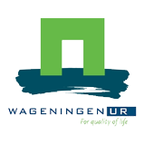

What can Witek and Robert offer: Create content for existing training systems (leeromgeving)
Search for background information, for example: Study the Questionnaire results from Kim van Vliet, student Nutrition & Health at Wageningen University & Research. This questionnaire was about a possible future online course on Big Data in the agriculture and food sector. The purpose is to determine what such a course should look like. Thus, when answering, please keep in mind what you would like to see from such an online course.
Survey WtH & RtH create survey. PvdT and SC circulate it among WUR students & researchers. WtH & RtH analyse survey and create user personas.
Meetup Objectives: Inspiration
Training subjects:
Training methods:
WUR Certificate